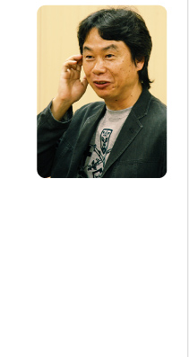

Secret
Oh nyooooo~! My secrests (；′⌒`)
I made these buttons for my site(s), feel free to use em. <3
Found these on the 2004 Katamari Damacy site.

How did you reach this page? Was it by using your lime green nintendo DS Lite?

AAAAAAAAAAAAAAAAAAAAAAAAAAAAAAAAAAAAAAAA
This could literally be us! (˶˃ ᵕ ˂˶) .ᐟ.ᐟ
(Found this stuff on old Nintendo pages)
I really like these Katamari Damacy wallpapers.
I miss Dirty Bomb.

 Nya~
Nya~